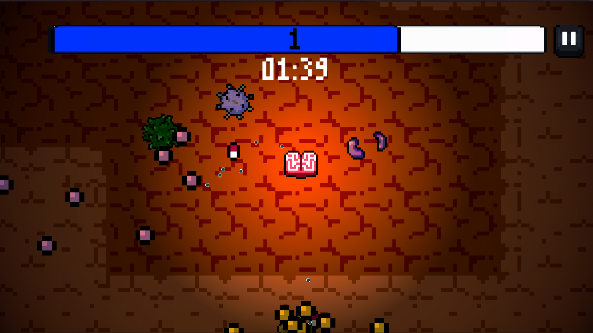

Healthy Brain In A Healthy Body
This was a team project created as a submission for the Bullet Hell Game Jam 2023.
The jam's theme was "limited". Based on that, we created a fast pasted bullet hell game, inspired by gameplay elements of "Vampire Survivors", where the player would pick limited use weapons, scattered through the level, in order to survive the hordes of incoming enemies within a given time limit. The player can level up by collecting experience points from dead enemies, with each level being a life point. If a player loses all of their levels, they lose. Additionaly, we designed the game's visual identity based on the idea that the player is a human brain, which tries to defend its body from external threats and viruses.
Co - creators:
Simonian (Pixel Art - Animation), Menelaos Alexiou (Music & Sounds)
Build for Android & Windows